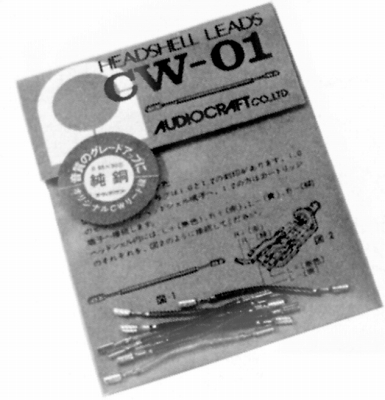
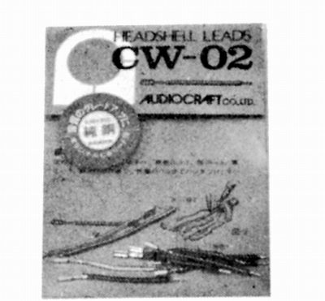
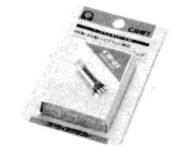
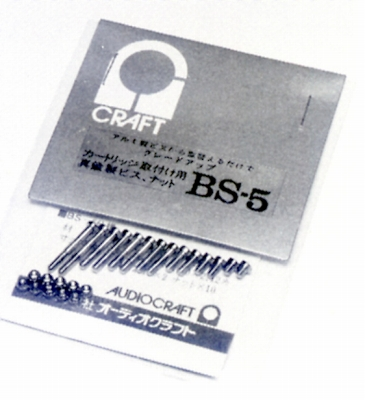
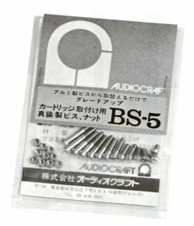
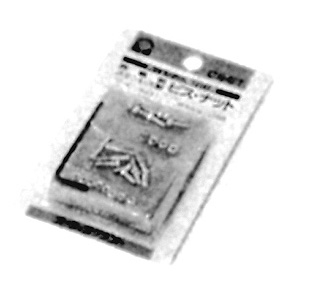
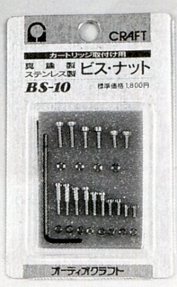

リードワイヤー他
リードワイヤー
CW-01

■価格 1,200円（8本1組）
■備考 高純度銅線使用。
0.05�o径×30芯。
両端ピン加工済み。
CW-02

■価格 1,200円（8本1組）
■備考 高純度銅線使用。
0.05�o径×30芯。
一端はシェルにハンダ付けするタイプ。英国マルチコアハンダ付き。
CW-05

■価格 2,200円（4本1組）
■備考 4N銅と6N銅のハイブリット構成で0.22�oスクエア。
ロジウムメッキのターミナルチップに無鉛銀ハンダを使用。
カートリッジ取付用ビス/ナット
BS-5
 
■価格 700円
■備考 カートリッジ取付用真鍮製ビス/ナット。
ビス7種類（3、5、7、10、12、14、18�o）各種2本、ナット10個入り。
上記写真右が発売当初のパッケージ、左は1980年代後半のもの。
同社のアームAC-3000/4000MC付属ヘッドシェルのものと同じ。
現在でも、チタンなどの”高音質”とされるビス/ナットが売られているが、その元祖というべき商品。
説明書。
BS-10
 
■価格 1,800円
■備考 カートリッジ取付用ビス/ナット。
真鍮製マイナスネジ+ステンレス製キャップスクリュー+真鍮製ナットのセット。
オーディオクラフトのインデックスへ